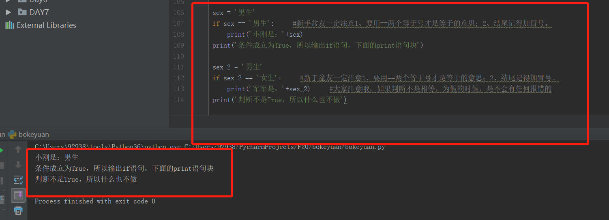
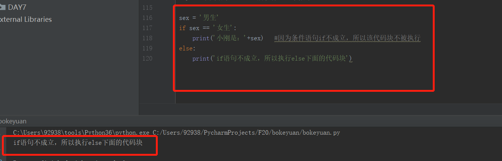
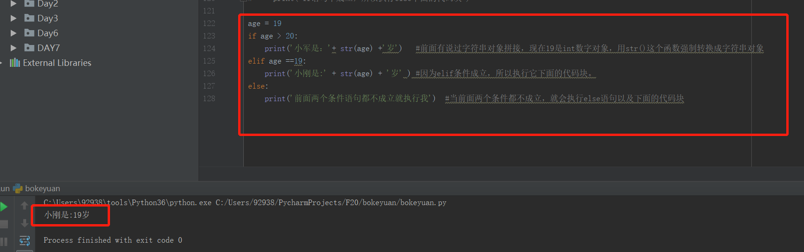
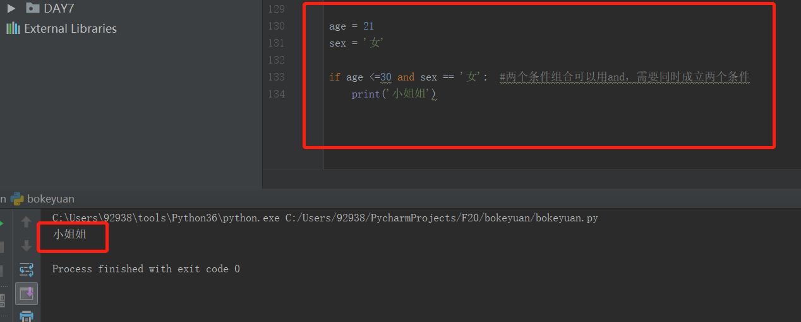
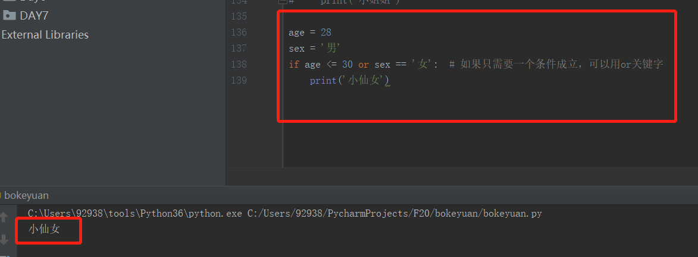
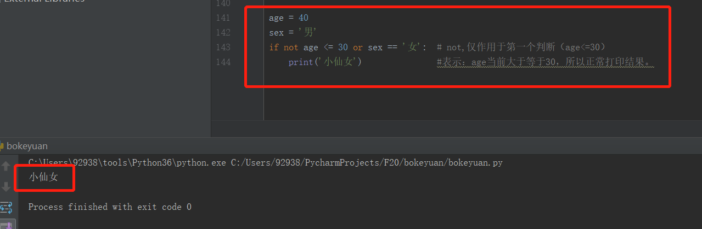

周五更新很累。。。
坚持，年薪20万又进了一步~~
python中的条件语句以【 if 】开头，条件语句成立时，运行该代码块，如果条件不成立，则跳过该代码块，执行后面的代码块。
简单的小示例：
输入性别，进行简单的判断，用if语句实现代码。
1 sex = '男生'
2 if sex == '男生': #新手盆友一定注意1、要用==两个等于号才是等于的意思；2、结尾记得加冒号。
3 print('小刚是：'+sex)
4 print('条件成立为True，所以输出if语句，下面的print语句块')
5
6 sex_2 = '男生'
7 if sex_2 == '女生': #新手盆友一定注意1、要用==两个等于号才是等于的意思；2、结尾记得加冒号。
8 print('军军是：'+sex_2) #大家注意哦，如果判断不是相等，为假的时候，是不会有任何报错的
9 print('判断不是True，所以什么也不做')

ennnn看了小简单的示例，你应该有大概的感觉了吧。。。。
那接下来我们总结下：
1、条件语句以if开头
2、每个if语句结尾要有冒号
3、每个if语句下面的语句块，要缩进，为了让python解释器知道，条件成立的时候，要执行的代码块是哪里
4、缩进的代码，建议大家用4个空格
接下来认识下else语句吧！
我们可以在if语句下面加一个else语句，意识是，当if语句不成立，不执行if语句下面的代码块时。我们执行else语句以及它的代码块。
话不多说，看代码：1 sex = '男生'
2 if sex == '女生':
3 print('小刚是：'+sex) #因为条件语句if不成立，所以该代码块不被执行
4 else:
5 print('if语句不成立，所以执行else下面的代码块')#不理解的小伙伴可以评论留言哦，同样需要注意，else后面也要用【：】冒号结尾哦

现在我们在深入了解下，elif语句的存在。
有的时候，一条判断是不够的，比如ennnnn回家的路有三条，指不定第一第二条路都修路了，所以我们就走第三条路吧。。。
这时候elif语句就存在了，可以根据实际的情况，添加多个elif语句。
展现下我们的技术：1 age = 19
2 if age > 20:
3 print('小军是：'+ str(age) +'岁') #前面有说过字符串对象拼接，现在19是int数字对象，用str()这个函数强制转换成字符串对象
4 elif age ==19:
5 print('小刚是:' + str(age) + '岁' ) #因为elif条件成立，所以执行它下面的代码块。
6 else:
7 print('前面两个条件语句都不成立就执行我') #当前面两个条件都不成立，就会执行else语句以及下面的代码块 总结一下：
1、elif语句其实是 else if 的缩写
2、if语句下面可以根据实际的情况，添加多条elif语句进行分支上面的判断
3、最后一个判断，通常用else
4、int是数字对象，str是字符串对象，两个不同类型的对象不能直接用+号进行拼接，所以需要用str()函数将int数字对象转换为字符串后，进行拼接
5、条件语句的基本结构大家在上面的案例中看懂了吗？
if 条件1：
<要执行的内容1>
elif 条件2：
<要执行的内容2>
elif 条件3：
<要执行的内容3>
elif 条件4：
<根据实际需求，写多个分支....>
else:
<最后执行的内容>
基本结构就是只有啦，没有学会的朋友可以评论哦~~~
一句话：条件判断的代码以if开头，其余分支以elif开头，结尾用else（代表上面所有都不满足后，执行它）
如果条件足够简单，也可以只写if一个语句
接下来我们还有多个条件组合的表达式哦
比如，年龄小于30岁，且是女性，我们叫她小姐姐。
如何用代码表示两个条件组合？
1 age = 21
2 sex = '女'
3
4 if age <=30 and sex == '女': #两个条件组合可以用and，表示两个条件需要同时成立
5 print('小姐姐')

那么如果两个条件满足一个即可执行语句下的代码怎么实现？
1 age = 28
2 sex = '男'
3 if age <= 30 or sex == '女': # 如果只需要一个条件成立，可以用or关键字
4 print('小仙女') 
当然如果我们需要表示反义，可以加关键字ont 比如：
1 age = 40
2 sex = '男'
3 if not age <= 30 or sex == '女': # not,仅作用于第一个判断（age<=30）
4 print('小仙女') #表示：age当前大于等于30，所以正常打印结果。
我们也可以这样写：括号的作用个上面的写法一样，作用于第一个判断（age<=30），加了not变成反义：age>=30
1 age = 40
2 sex = '男'
3 if not (age <= 30 or sex == '女'): # 括号的作用个上面的写法一样，作用于第一个判断（age<=30）
4 print('小仙女') #表示：age当前大于等于30，所以正常打印最后还有一个知识点，就是我们在时间代码编写的时候，会有很多场景需要：条件语句嵌套多个条件语句，这就是大家说的条件语句嵌套
我们看下代码和使用场景：
场景：我们判断学生的分数，如果分数大于60分，我们就说及格了。否则就是不及格，我们说需要叫家长了！！！
如果及格了，我们划分大于等于90分的时候，说优秀。如果大于等于80分，我们说良好。否则我们说在努力下（80---60分的时候）
代码实现： 不理解的小伙伴可以咨询我哦
1 scores = 75.8
2 if scores>= 60: #基本条件一
3 print('%s分及格了'%scores)
4 if scores>=90: #额外条件1
5 print('优秀')
6 elif scores>=80: #额外条件2
7 print('良好')
8 else: #额外条件3
9 print('再努力下')
10 else: #基本条件2=二
11 print('%s 分叫家长面谈'%scores) #回顾下前面的字符串格式化哦
希望能帮助初学者，来自一名记笔记的初学者，从努力到不要放弃~~~